Selected work
Four stories, one way of designing.
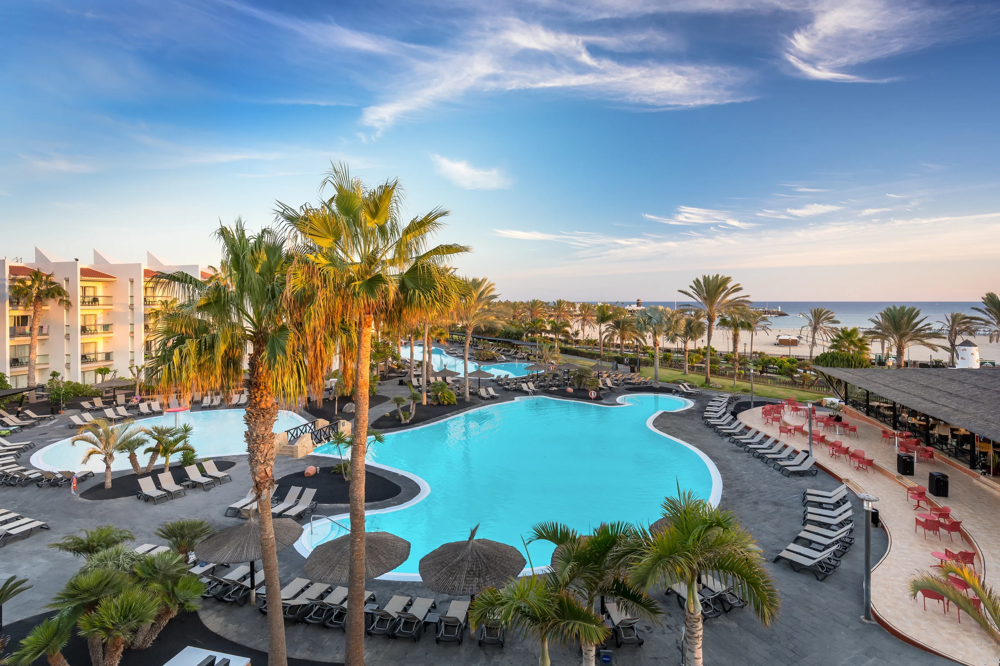
→ 01Barceló
Redesign of a transactional website in the hospitality sector.
→ 02MAPFRE
Selected projects carried out for a leader in the insurance sector.
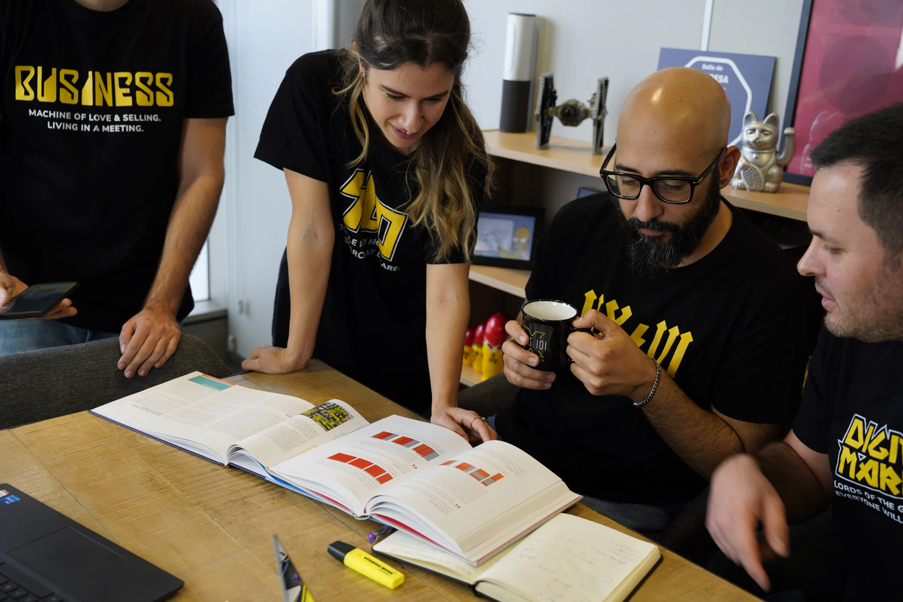
→ 03Flat 101
Leadership of an internal process optimization project.
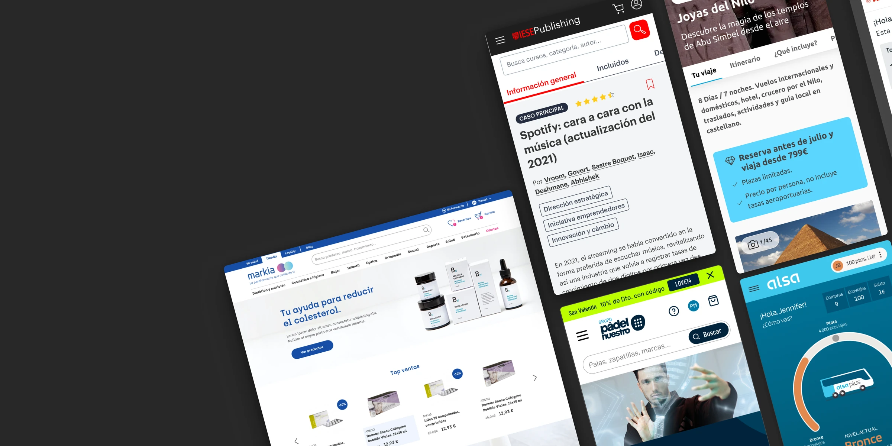
→ 04Other projects
Cofares, Meliá, IESE, Pádel Nuestro and Alsa.
ABOUT THE PROJECT
Barcelo.com redesign project
Barceló Hotel Group, one of the leading hotel chains in Spain with a presence in over 30 countries, chose Flat 101 to lead the redesign of its main website: barcelo.com. The goal was to improve the user experience, increase conversion rates, and strengthen brand identity.
Once we completed the agreed redesign phase with positive results, the client decided to include the project of redesign of its website for professionals (barcelo.pro) as well as an ongoing collaboration focused on optimizing the conversion funnel through A/B testing.
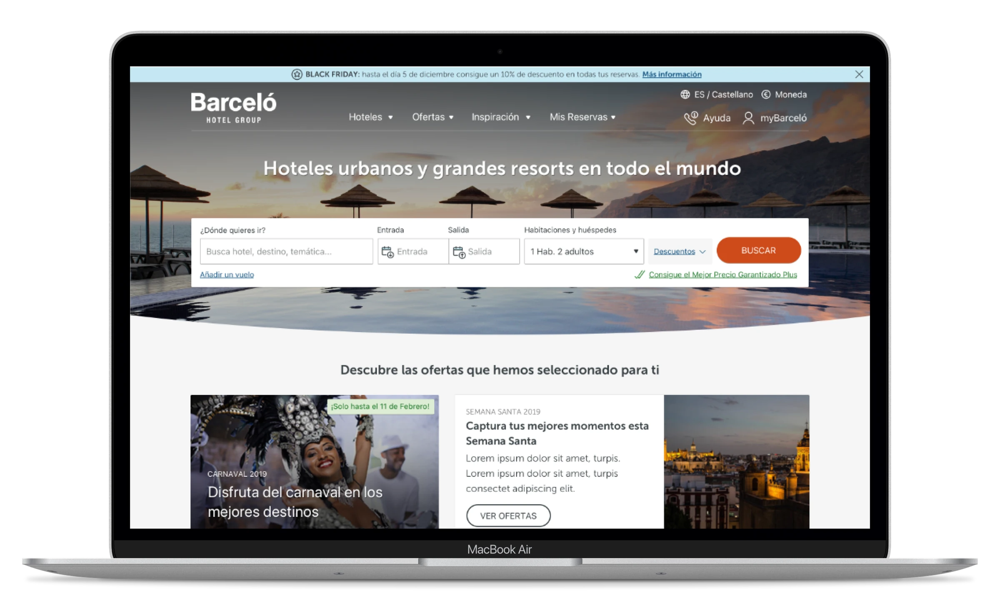
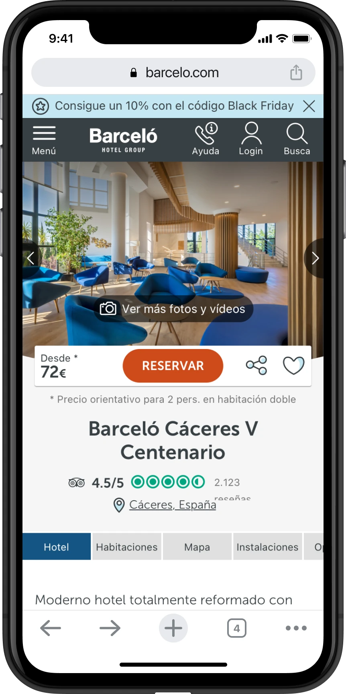

PROJECT DEVELOPMENT
How we did it
The redesign of Barceló allowed me to take part in all phases of the project: discovery, conceptualization, definition, and validation — contributing my vision and working towards the shared goal.
1Working sessions with the client
As a starting point for the project, we traveled to Mallorca to meet with all stakeholders during a two-day workshop. The goal was to know first-hand insights of the project’s needs, limitations, and requirements.
2Research and analysis
The Research team conducted a comprehensive investigation using methods such as surveys, tree testing, and card sorting.
Using heatmaps gathered from Hotjar, I contributed a heuristic analysis of the main page types, as well as a comparative study of some key functionalities.
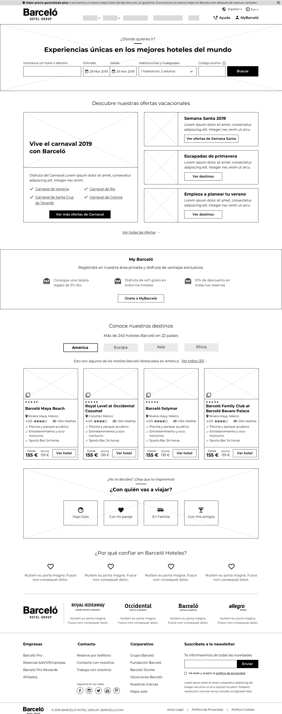
3Conceptualization
Based on the insights gathered, I began working on the conceptualization of the most relevant pages of the site: the homepage, product list pages, and hotel detail pages. I translated the new structure of these screens into a series of wireframes that we shared with the client, allowing us to align on key concepts and build a solid base before starting with the visual design phase.
4UI Kit
Before I began designing, I created a basic UI Kit structure. This document included color palettes, typographic scales, iconography, and essential elements such as CTAs and form fields. The UI Kit enabled us to design the scoped pages efficiently while maintaining visual consistency.
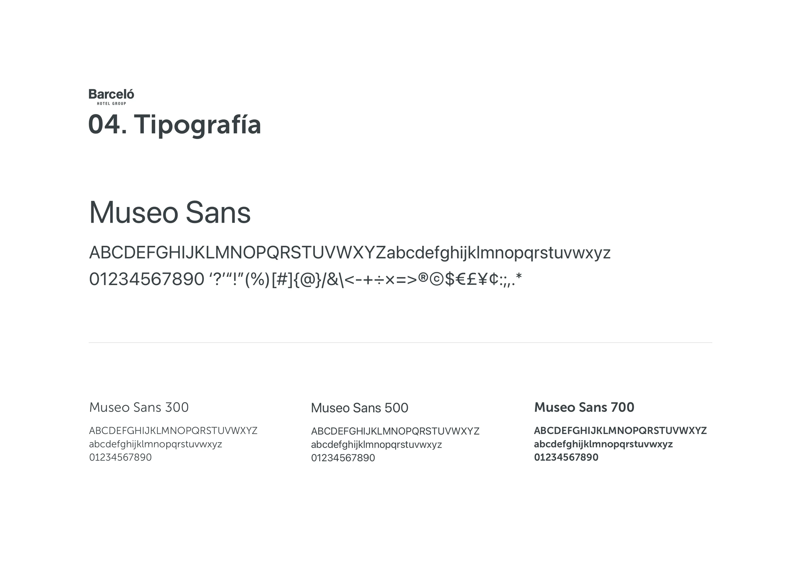
5Visual design
We began applying the visual layer, implementing the styles defined in the UI Kit onto the structures created during the conceptualization phase. Throughout this stage, communication with the client was constant due to the need to present and validate progress in both design and functionality.
6User testing
Once the visuals were delivered, a series of user tests were conducted to validate the proposal. Some of the issues identified were classified as hygiene improvements; however, other findings were taken to A/B testing to try out more specific solutions, as they involved key functionalities.
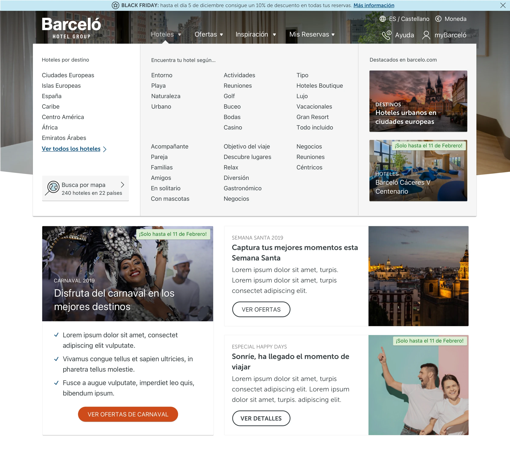
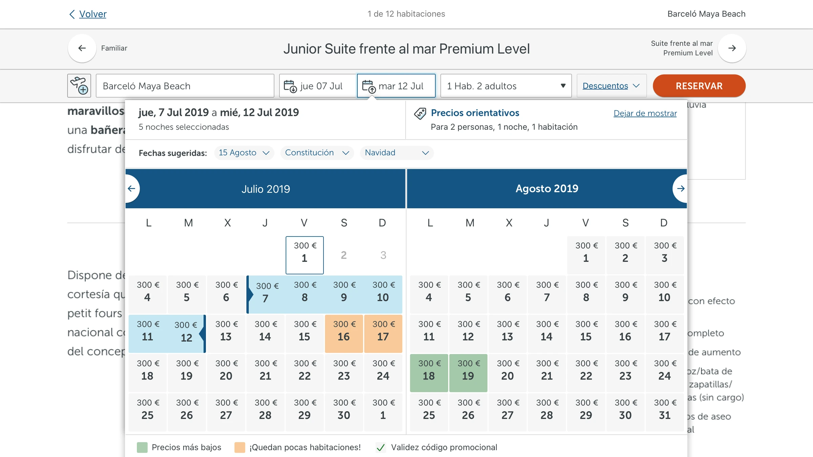
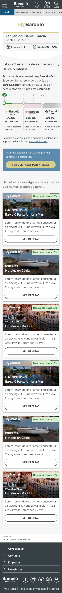
ABOUT THE PROJECT
Projects for MAPFRE.es
MAPFRE is one of the most important insurance companies in Spain and internationally recognized, with a presence in over 40 countries. Our previous experiences with other firms such as DKV, Sanitas, Reale, Liberty, and RACE — projects in which I was also deeply involved— attracted MAPFRE to our orbit, officially making us one of their providers in 2020.
My journey with MAPFRE has allowed me to further develop the skills I already have and explore others that were new to me. Over these five years, I have been deeply involved, working as a designer, one important point of contact for clients and team leader, collaborating on projects with a wide range of topics and complexities.
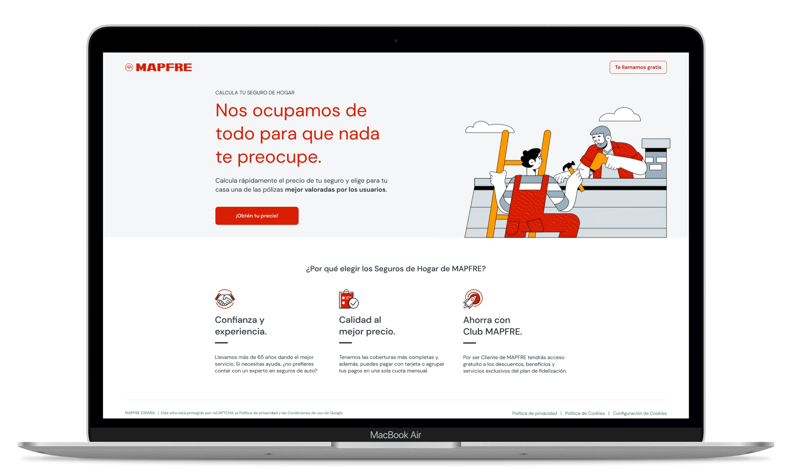
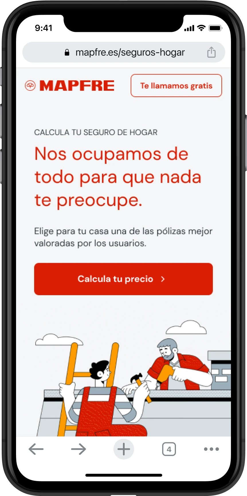
FEATURED PROJECTS
Some of my projects for MAPFRE
Below are details of 3 of the most relevant projects I have collaborated on during this time, although I have participated and continue participating in many others.
1Auto Quote Calculators and more
One of the key tools for conversion at MAPFRE are the insurance quote calculators, which allow users to quickly obtain an estimated price for their insurance and, if desired, purchase it online.
A significant part of my work at MAPFRE has focused on the quote calculators, especially the Auto one. For this tool we conducted heuristic analyses, comparative studies, prototypes, visual designs based on the company’s Design System, and even A/B tests on critical moments in the process.
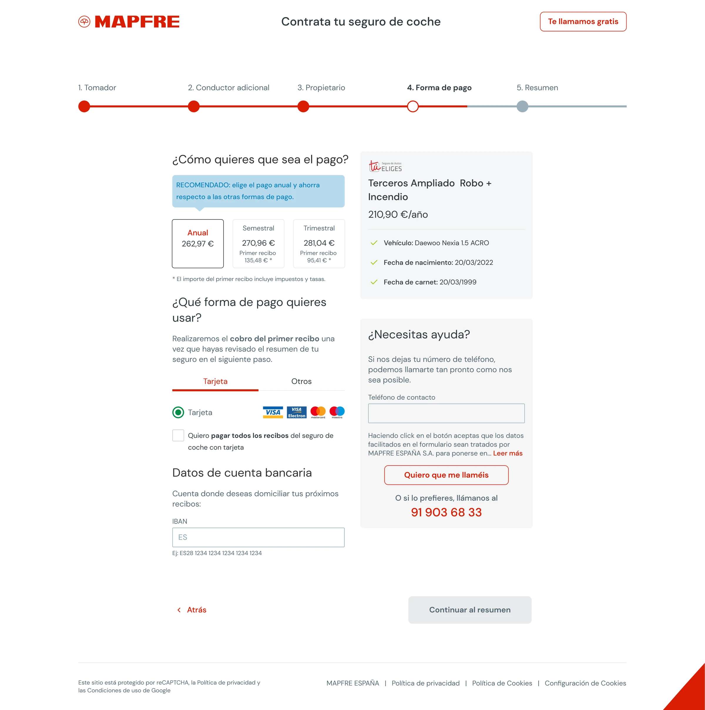
2AFIN, MAPFRE’s financial application
Another long-term project during my years at MAPFRE. The complexity of the operations and the large amount of information to display about savings, investment, and pension products make this project a true challenge.
We started from a previous version of the app and developed a UI Kit based on MAPFRE’s design system. We worked closely with MAPFRE’s finance and customer experience teams to optimize existing processes and solve new needs that continue to appear today.
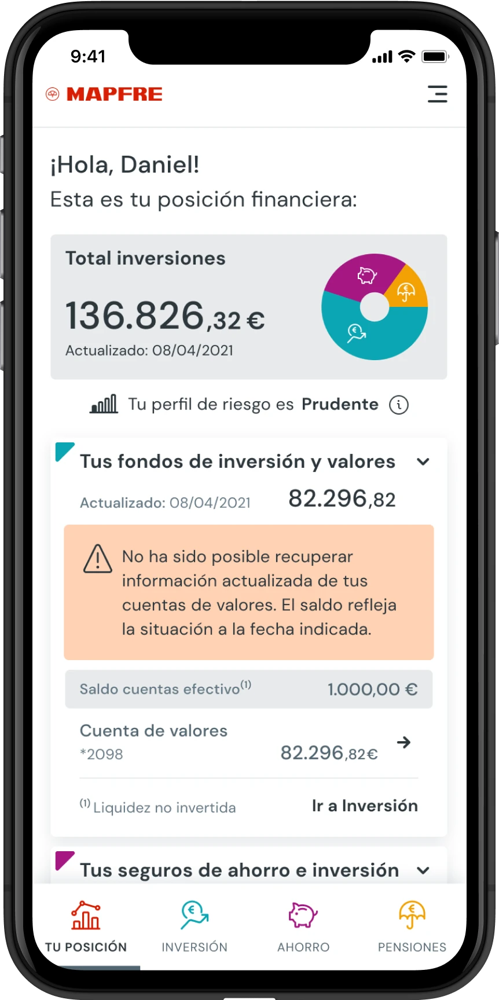
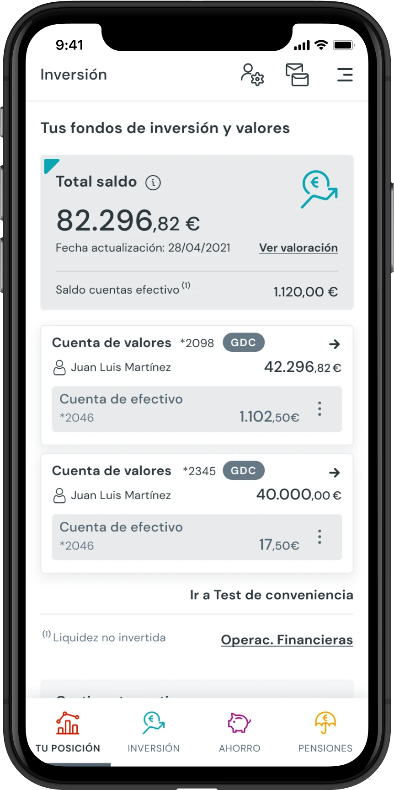
3AMI, MAPFRE’s virtual assistant
I have had the opportunity to participate in this exciting project from the very beginning, playing a key leadership role in the visual design phase and a prominent role in the conversational design phases:
- Work sessions with involved stakeholders, which helped define AMI’s personality.
- Creation of the virtual assistant’s naming, image design, and motion branding.
- Design of a UI Kit that included the basic components for AMI’s interaction with users in the chat.
- Writing guide, voice and tone for AMI.
- Conversational flows and UX writing applied to different user stories for integrating AMI into the health app and MAPFRE’s private area. We worked hand in hand with developers, implementing generative AI.
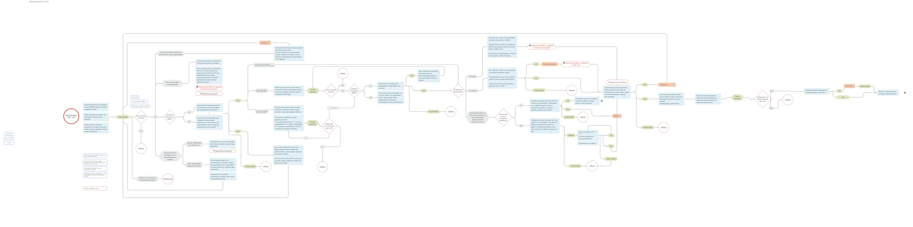
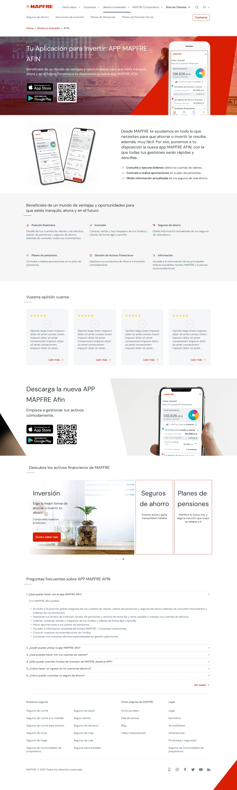
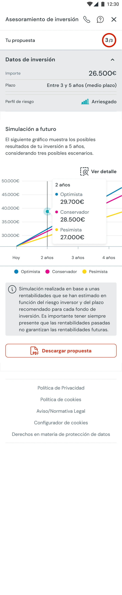
ABOUT THE PROJECT
Heuristic analyse process optimization
During my time as a manager, It became necessary to review and improve the process of conducting heuristic analyses, aiming to standardize both the methodology and the deliverable documents. Given my prior experience with this technique, I volunteered to lead the the project team, identifying the following objectives:
- Conduct research to understand existing methodologies and analyze the processes then followed in Flat 101.
- Define and formalize an appropriate procedure for performing heuristic analyses.
- Create one or more insight checklists to streamline the analysis process and the preparation of deliverable documents for the client.
- Develop a governance workflow to ensure the maintenance and updating of heuristic templates and guarantee their proper use.
- Evangelize and train the team through a general presentation and the creation of specific working groups to answer any questions.
PROJECT DEVELOPMENT
How we did it
To plan the work, I applied the Double Diamond methodology and its four phases: discovery, definition, conceptualization, and validation.
1Discovery
The team conducted internal and external research through surveys, user testing, desk research, and focus groups, with the following specific objectives:
- Discover the most commonly used techniques, evaluating the convenience of conducting individual or group analyses.
- Gather existing documentation within Flat 101, from various repositories and different teams.
- Define which tool would be used to list the aspects to be analyzed during the process: Confluence, Spreadsheet, etc.
- Develop a client list categorized by business type to consider the sector in the insight listings.
2Definition
In this phase, the procedure to follow and the structure of the heuristic analysis document content began to take shape:
- Identification of the essential and optional steps to carry out the heuristic analysis.
- Review of the templates collected in the previous phase and evaluation of the need for sector-specific documents.
- Organization of the checklist content, specifying the aspects to analyze, recommendations, and the article, law, or principle on which these recommendations are based.
- Creation of the table of contents for the deliverable document.
3Conceptualization
Once the structure was defined, the team focused on creating the working documents, client deliverables, and the governance workflow for our heuristic templates:
- Creation of the checklist of aspects to evaluate (working document) and the deliverable document, that is, the base template for presenting insights and recommendations to the client.
- Creation of the usage manual, an internal document that explains each step of the process.
- Formalization of the feedback reception and assimilation process through the definition of the governance workflow. This process is crucial as it allows us to keep our knowledge base updated, establishing a continuous improvement cycle.
- Presentation of the work done to Management before making all the created resources available to the rest of the team.
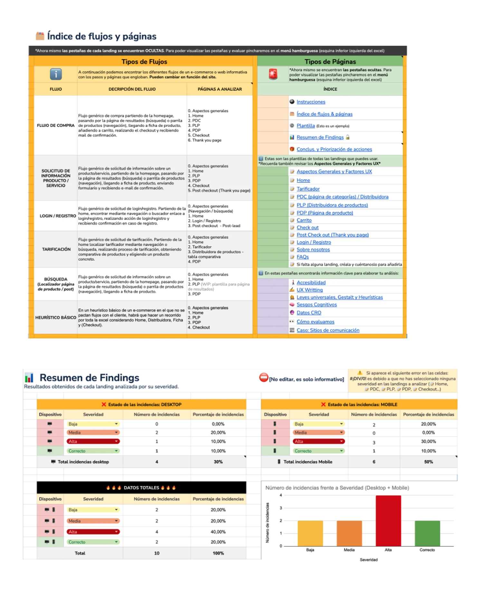
4Validation
Finally a small committee was established to oversee the defined heuristic analysis system. This squad would be responsible for tasks such as:
- Conducting surveys, periodic reviews, and reminders.
- Documenting potential changes in Confluence.
- Providing support to colleagues’ questions regarding the heuristics and the system itself.
- Proactively proposing optimization improvements.
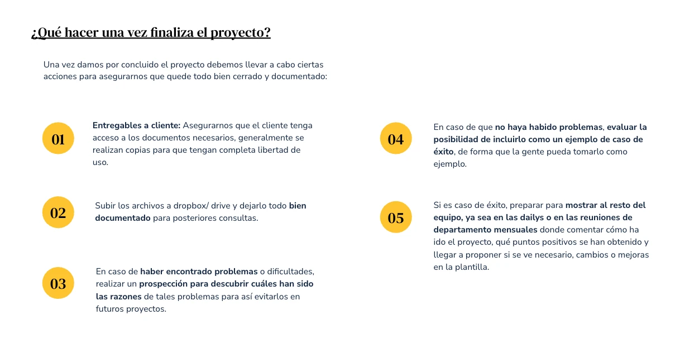
WELNIA, 2020
Designing the e-commerce for Cofares’ new online pharmacy.
Cofares is the largest national distributor of pharmaceuticals and pharmacy products, with over 11,000 associated pharmacies and warehouses across Spain.
They came to Flat 101 because they needed to renew their e-commerce platform to compete in the medium term with the main players in the sector. My role in the project was as design lead, managing client communication and handling the main part of the design workload.
A preliminary conceptualization phase was carried out, including wireframes and information architecture. A simple yet well-documented design system was created, and work was done on the visual design of the most relevant pages and functionalities. The client was satisfied and decided to entrust us with the redesign of the private area for pharmacies as well.
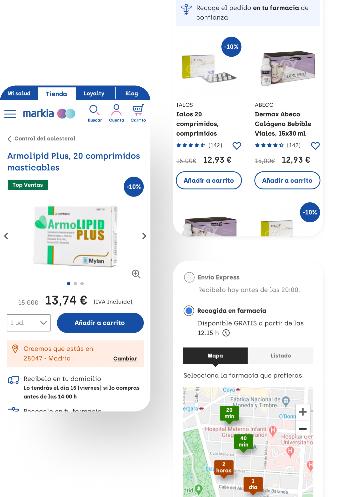
MELIÁ IBLUE, 2020-2024
Optimizing the processes of Meliá’s Call Center.
Meliá iBlue is the main tool used by Meliá’s Call Center. It is the platform agents rely on daily to handle inquiries and make or modify individual and group bookings.
The project was initiated with the goal of identifying improvement opportunities to streamline agents’ work. After close and extended collaboration with all stakeholders (business, agents, developers, etc.), all the tool’s flows and screens were redesigned, establishing a design system that served as the foundation for other internal company projects.
Among other achievements, the project succeeded in simplifying customer identification, improving navigation, and restructuring the fast booking process.
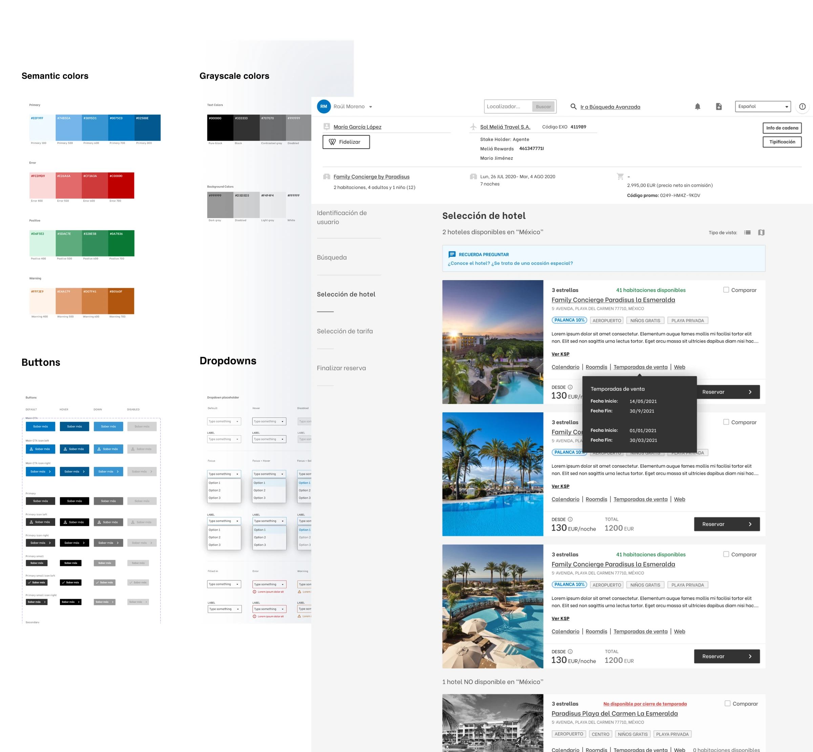
IESE BUSINESS SCHOOL, 2024
Taking the lead on the redesign of IESE Publishing.
IESE Publishing is IESE’s publishing unit, dedicated to the distribution and marketing of educational materials, especially focused on business management and administration.
I joined the project in a challenging situation, as expectations were not being met. As a manager, I focused on conceptualizing and validating the most relevant pages and flows to recover the client’s trust. Once the crisis was overcome, I concentrated on leading, coordinating, and advocating the work of three designers in developing the UI Kit and creating the visual designs.
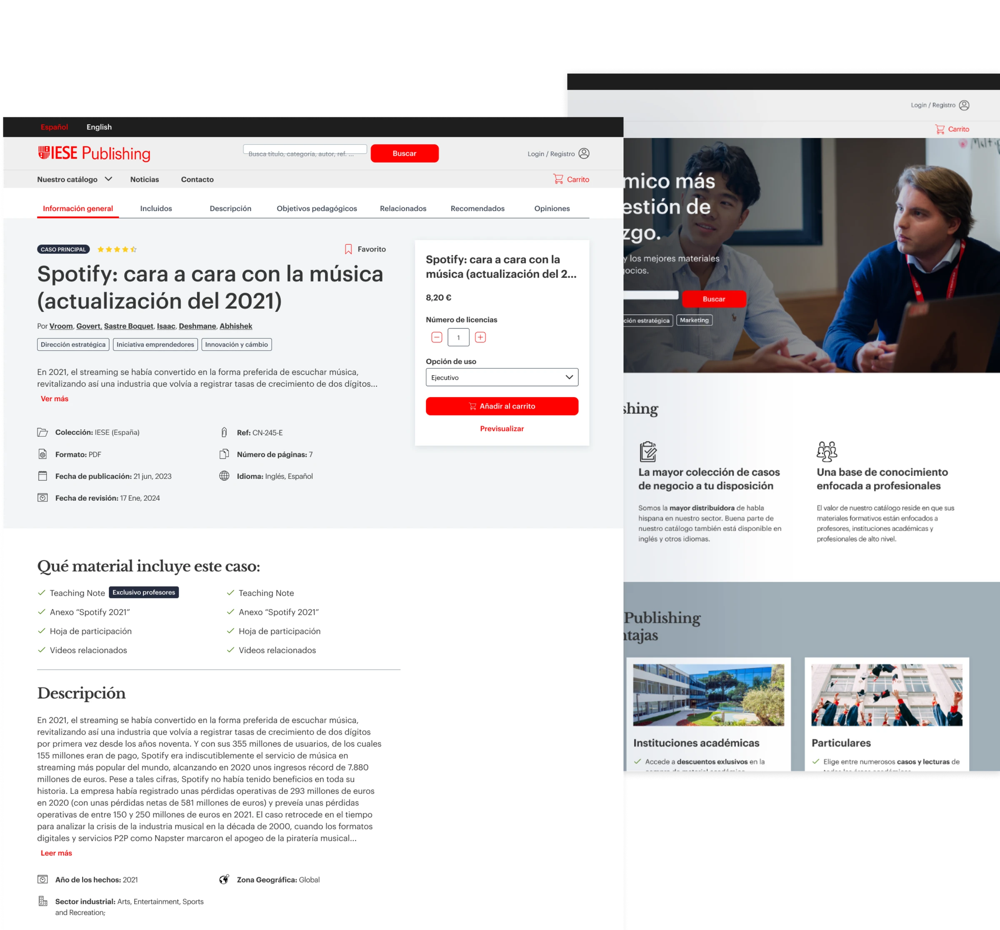
PÁDEL NUESTRO, 2025
Redesign of Pádel Nuestro’s B2C e-commerce.
Pádel Nuestro is the international leader in paddles and other products for playing pádel. They contacted us to redesign the three main websites in their digital strategy, starting with padelnuestro.com, focused on B2C.
I joined the project after the design phase had already started and, although I wasn’t the lead, I applied all my expertise to move it forward. While some design progress had been made, it was necessary to standardize styles and components and bring the design closer to the brand’s identity. Therefore, we worked on a series of wireframes for the main pages, improved consistency through the creation of a UI Kit, and finally, completed the visual design of the agreed screens.
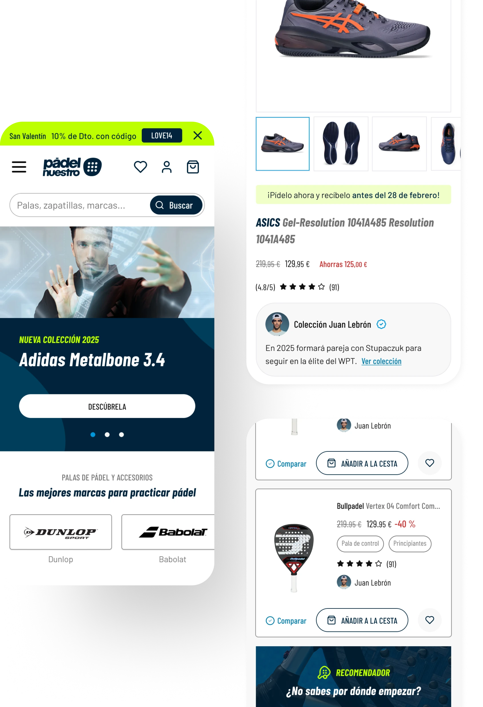
ALSA, 2025
Optimization of the ticket sales flow and redesign of private area.
Alsa is the leading coach company for passenger transport in Spain with international reach. They came to Flat 101 with the goal of improving conversion in the ticket sales flow on their website and app, as well as to develop a new strategy for the company’s loyalty program.
To achieve this, a preliminary BECO analysis phase was conducted, identifying several pain points in the sales funnel. From the design side, we gathered conclusions and recommendations from the study and began reconceptualizing the flows for both logged-in and non-logged-in users. We created a UI Kit based on their branding, modernizing the design and providing solutions for accessibility issues present in their corporate style. The quality of the work led the client to also request the visual redesign of the private area, which was not part of the initial scope.
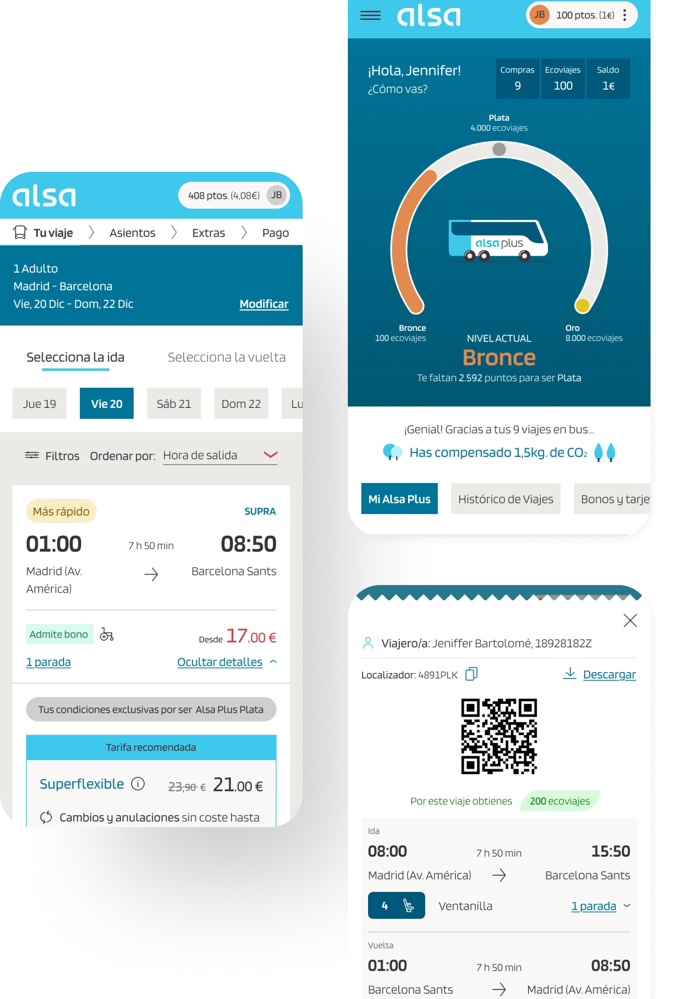